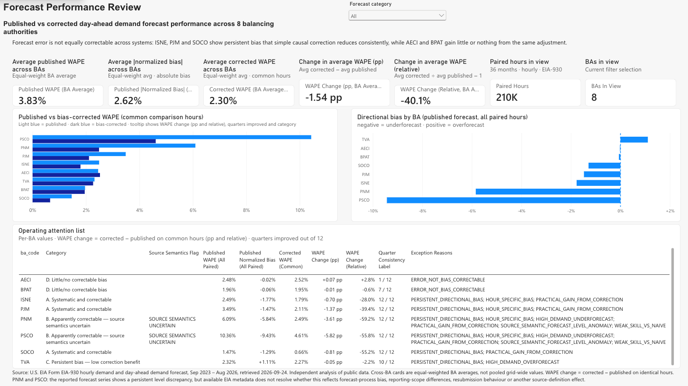

Forecast evaluation · Python · Power BI
Electricity Demand Forecast Review
Review of published day-ahead electricity-demand forecasts for eight U.S. balancing authorities: how accurate they are, where they are consistently wrong, and how much a simple correction based on earlier errors helps.
Open the Power BI report (PDF)Problem
Grid operators publish hour-by-hour forecasts of the next day's electricity demand, and EIA posts them next to the demand that actually came in (Form EIA-930). The data is public, but it doesn't tell you how good the forecasts are, whether some operators miss in the same direction day after day, or whether that miss could be corrected using their own recent errors.
What I did
Compared published forecasts with actual demand for eight balancing authorities, September 2023 to August 2026, chosen for complete data (selection record). Measured WAPE, MAE and normalized bias against a seasonal-naive benchmark (the same hour one week earlier).
Built a bias correction that adds back the average miss for the same authority and hour of day over the 28 days ending two days before the forecast day, and checked whether it held up year by year and quarter by quarter. No new forecasting model was trained.
Result
ISNE, PJM and SOCO kept missing in the same direction, and the correction cut their error in all 12 quarters. For the others it helped little or not at all, and AECI got slightly worse. Six of the eight published forecasts were already strong, with 61–86% less error than the seasonal-naive benchmark. PNM and PSCO did not beat it. PNM's forecast was only 5% better overall, PSCO's was 15% worse, and each lost to the benchmark in one of the three years.
| Authority | WAPE | Relative change | Quarters improved |
|---|---|---|---|
| PJM | 3.49% → 2.11% | −39.4% | 12 / 12 |
| SOCO | 1.46% → 0.66% | −55.2% | 12 / 12 |
| ISNE | 2.49% → 1.79% | −28.0% | 12 / 12 |
| TVA | 2.32% → 2.27% | −2.2% | 10 / 12 |
| BPAT | 1.96% → 1.95% | −0.6% | 7 / 12 |
| AECI | 2.45% → 2.52% | +2.8% | 1 / 12 |
Power BI report
Two-page report built in the Power BI Service with Power Query and DAX. The DAX measures match the Python results for all eight authorities.


Limitations
EIA revises values in place, so the data may include later revisions and the results are a retrospective evaluation.
Authorities were chosen on reporting quality, and Texas and California are not included.
The dataset covers three years. Cost, reliability and operational impact were not estimated.